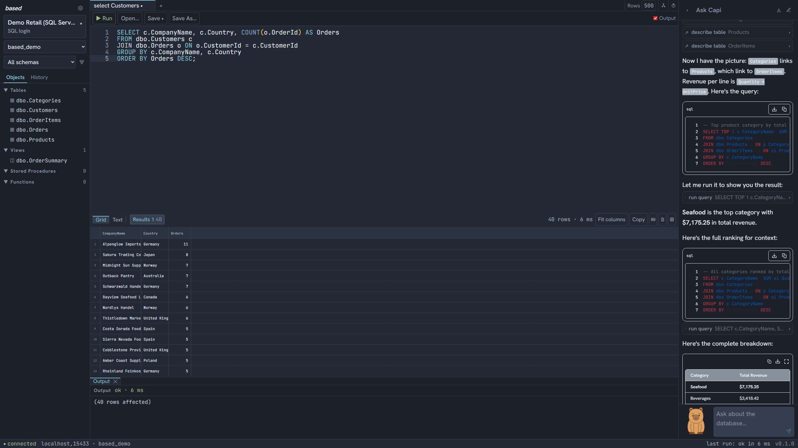
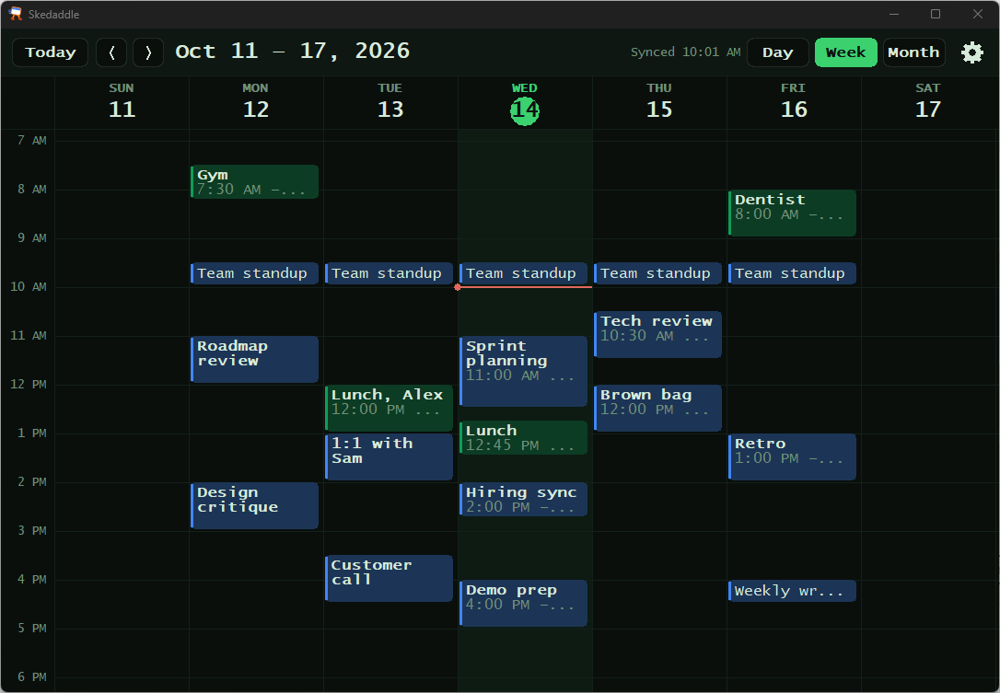
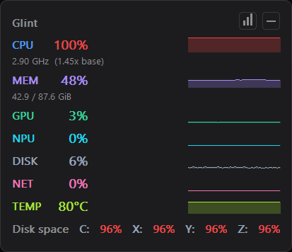

based
A database workbench with an AI that can see—and work with—your actual workspace. SQL Server, Snowflake, and LanceDB in one native desktop app.

Queries, grids, vector search, and an agent that participates.Source code
I’m Cyrus. I build tools that make computers more useful—and explore how much AI the hardware we already own can handle.
Explore the workThe everyday tools should be the good ones. These are mine.
A database workbench with an AI that can see—and work with—your actual workspace. SQL Server, Snowflake, and LanceDB in one native desktop app.

Small tools. A better desktop. A growing suite of Windows utilities, including Glint and Skedaddle.


Your drive is full. What’s actually on it? Hoardini gathers the evidence, explains the big files, and helps you decide what to delete, shrink, move, or keep.
Know what’s there.
Make room for what’s next.
Local models. Open kernels. Experiments that ask more of an ordinary machine.
Chat, image generation, and document search, running in your browser on your hardware. Download the models, then run locally. No account or inference server required.
Meet BlabberStackSmaller models. Cheaper experiments. Honest write-ups of the wins and the failures—from pruning Qwen models to a 4 MB title generator.
Put the AMD Ryzen AI NPU to work on long prompts in Lemonade and llama.cpp, using existing GGUF models. An experimental preview; results depend on the model and hardware.
Open kernels and runtime work for AMD’s XDNA2 NPU. Real model benchmarks run through the C++ engine; the CLI and server are still being integrated.
Small interventions in the business of building software with agents.
Parallel agents, one machine. Call dibs on the GPU, NPU, network, or test database so sessions take turns instead of colliding.
dibs run gpu -- python train.pyShorten the conversation. Keep the context. A Claude Code plugin that uses a smaller, faster model to summarize long sessions.
Less waiting. Back to work.Some ideas become daily tools. Some are still asking interesting questions.
What if an in-app copilot could execute a whole sequence of actions in one script? SandwichTS explores that with sandboxed code and explicit access to live client-side state.
Open the experimentA tiny model that writes a tool-calling program instead of narrating every step. Compiler and sandbox built; the decoder and NPU runtime remain experimental.
A desktop Markdown workspace with live preview, WYSIWYG editing, math, and diagrams.
A SQL Server CLI and MCP server for Claude Code. A direct connection between the agent and the database.